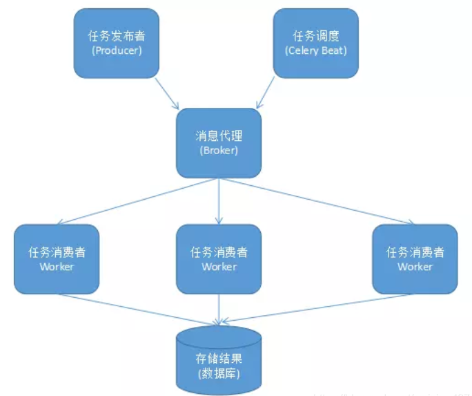
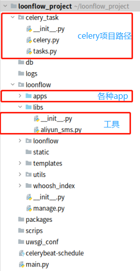
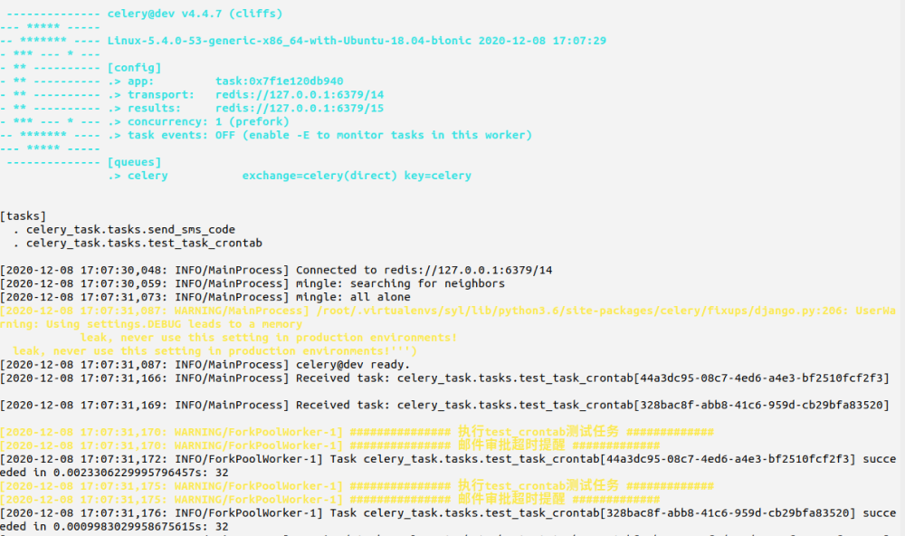
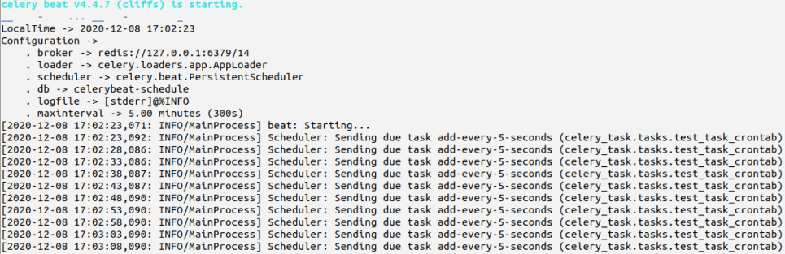
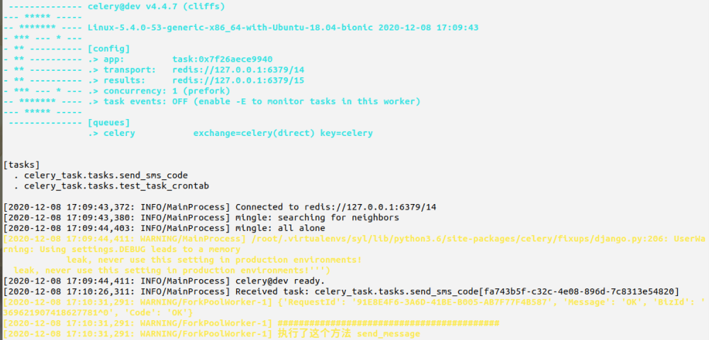

# Celery 异步框架
# 介绍
Celery是一个 基于python开发的分布式异步消息任务队列，通过它可以轻松的实现任务的异步处理， 如果你的业务场景中需要用到异步任务，就可以考虑使用celery你想对 100 台机器执行一条批量命令，可能会花很长时间 ，但你不想让你的程序等着结果返回，而是给你返回 一个任务 ID, 你过一段时间只需要拿着这个任务 id 就可以拿到任务执行结果， 在任务执行 ing 进行时，你可以继续做其它的事情
Celery在执行任务时需要通过一个消息中间件来接收和发送任务消息，以及存储任务结果， 一般使用rabbitMQorRedis
# 优点
- 简单：一但熟悉了
celery的工作流程后，配置和使用还是比较简单的 - 高可用：当任务执行失败或执行过程中发生连接中断，
celery会自动尝试重新执行任务 - 快速：一个单进程的
celery每分钟可处理上百万个任务 - 灵活： 几乎
celery的各个组件都可以被扩展及自定制
# celery 架构图

# Celery 扮演生产者和消费者的角色
Celery Beat: 任务调度器. Beat 进程会读取配置文件的内容，周期性的将配置中到期需要执行的任务发送给任务队列.Celery Worker: 执行任务的消费者，通常会在多台服务器运行多个消费者，提高运行效率.Broker: 消息代理，队列本身。也称为消息中间件。接受任务生产者发送过来的任务消息，存进队列再按序分发给任务消费方 (通常是消息队列或者数据库).Producer: 任务生产者。调用 Celery API , 函数或者装饰器，而产生任务并交给任务队列处理的都是任务生产者.Result Backend: 任务处理完成之后保存状态信息和结果，以供查询.
# Django 实现异步任务与定时任务
# 相关依赖包
pip install Django==2.2 | |
pip install celery==4.4.7 | |
pip install django-celery-beat==2.1.0 | |
pip install redis==3.5.3 |
# 目录结构

# celery.py
from celery import Celery | |
import os,sys | |
import django | |
# 1. 添加 django 项目根路径 | |
CELERY_BASE_DIR = os.path.dirname(os.path.abspath(__file__)) | |
sys.path.insert(0, os.path.join(CELERY_BASE_DIR, '../loonflow')) | |
# 2. 添加 django 环境 | |
os.environ.setdefault("DJANGO_SETTINGS_MODULE","loonflow.settings") | |
django.setup() # 读取配置 | |
# 3.celery 基本配置 | |
app = Celery('task', | |
broker = 'redis://127.0.0.1:6379/14', | |
backend = 'redis://127.0.0.1:6379/15', | |
include=['celery_task.tasks',] | |
) | |
# 4. 实例化时可以添加下面这个属性 | |
app.conf.update( | |
result_expires=3600, #执行结果放到 redis 里，一个小时没人取就丢弃 | |
) | |
# 5. 配置定时任务：每 5 秒钟执行 调用一次 celery_task 下 tasks.py 文件中的 add 函数 | |
app.conf.beat_schedule = { | |
'add-every-5-seconds': { | |
'task': 'celery_task.tasks.test_task_crontab', | |
'schedule': 5.0, | |
'args': (16, 16) | |
}, | |
} | |
# 时区 | |
app.conf.timezone = 'Asia/Shanghai' | |
if __name__ == '__main__': | |
app.start() |
# tasks.py
from .celery import app | |
import os,sys | |
from .celery import CELERY_BASE_DIR | |
'''测试定时任务''' | |
@app.task() | |
def test_task_crontab(x,y): | |
'''添加django项目路径''' | |
sys.path.insert(0, os.path.join(CELERY_BASE_DIR, '../loonflow')) | |
from libs.aliyun_sms import test_crontab | |
res = test_crontab(x,y) | |
return x + y | |
# 执行异步任务 | |
@app.task(bind=True) | |
def send_sms_code(self, mobile, datas): | |
sys.path.insert(0, os.path.join(CELERY_BASE_DIR, '../loonflow')) | |
# 在方法中导包 | |
from libs.aliyun_sms import send_sms | |
# time.sleep(5) | |
try: | |
# 用 res 接收发送结果，成功是:０， 失败是：－１ | |
res = send_sms(mobile, datas) | |
except Exception as e: | |
res = '-1' | |
if res == '-1': | |
# 如果发送结果是 -1 就重试. | |
self.retry(countdown=5, max_retries=3, exc=Exception('短信发送失败')) |
# aliyun_sms.py
def send_sms(phone, data): | |
client = AcsClient(ALY_ACCESSKEY_ID, ALY_ACCESSKEY_SECRET, 'cn-hangzhou') | |
request = CommonRequest() | |
request.set_accept_format('json') | |
request.set_domain('dysmsapi.aliyuncs.com') | |
request.set_method('POST') | |
request.set_protocol_type('https') | |
request.set_version('2017-05-25') | |
request.set_action_name('SendSms') | |
request.add_query_param('RegionId', "cn-hangzhou") | |
request.add_query_param('PhoneNumbers', phone) | |
request.add_query_param('SignName', "ABC商城") | |
request.add_query_param('TemplateCode', "SMS_205407934") | |
request.add_query_param('TemplateParam', data) | |
response = client.do_action(request) | |
# python2: print(response) | |
res = json.loads(str(response, encoding='utf-8')) | |
print(res) | |
print("##########################################") | |
print('执行了这个方法 send_message') | |
def test_crontab(x,y): | |
print('############### 执行test_crontab测试任务 #############') | |
print('############### 审批超时短信提醒 #############') |
# 测试定时任务
开启异步 celery -A celery_task worker -l INFO

开启定时任务 celery -A celery_task beat -l INFO

# 测试异步任务

# Celery 管理
celery -A celery_task worker -l INFO # 单线程 | |
celery -A celery_task status # 查看当前有哪些 worker 在运行 | |
celery multi start w1 w2 -A celery_task -l INFO # 一次性启动 w1，w2 两个 worker | |
celery multi stop w1 w2 -A celery_task #停止 w1，w2 两个 worker | |
# 项目中启动 celery worker , 并发数最多 50，最少 10 个 | |
celery multi start celery_task -A celery_task -l debug --autoscale=50,10 | |
# 在项目中关闭 celery worker 所有进程 | |
ps auxww|grep "celery worker"|grep -v grep|awk '{print $2}'|xargs kill -9 |
# django-celery-beat 管理
# 启动 celery beat | |
celery -A celery_task beat -l INFO | |
# 项目中启动 celery beat | |
celery -A celery_task beat -l debug >> /aaa/Scheduler.log 2>&1 & | |
# 停止 celery beat 杀死所有心跳进程 | |
ps -ef | grep -E "celery -A celery_task beat" | grep -v grep| awk '{print $2}' | xargs kill -TERM &> /dev/null |